Una fuente de poder es el componente del computador encargado de convertir la corriente eléctrica en la energía que necesitan los demás componentes del equipo.
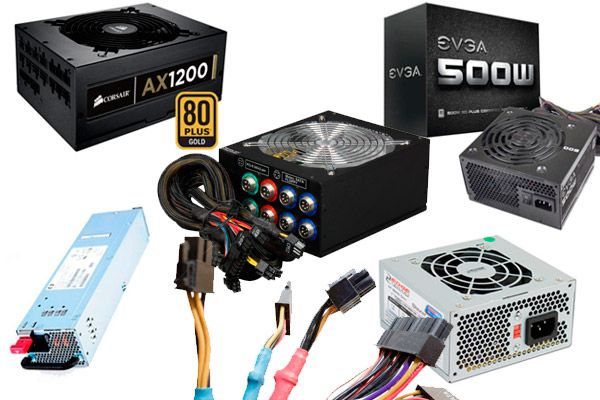
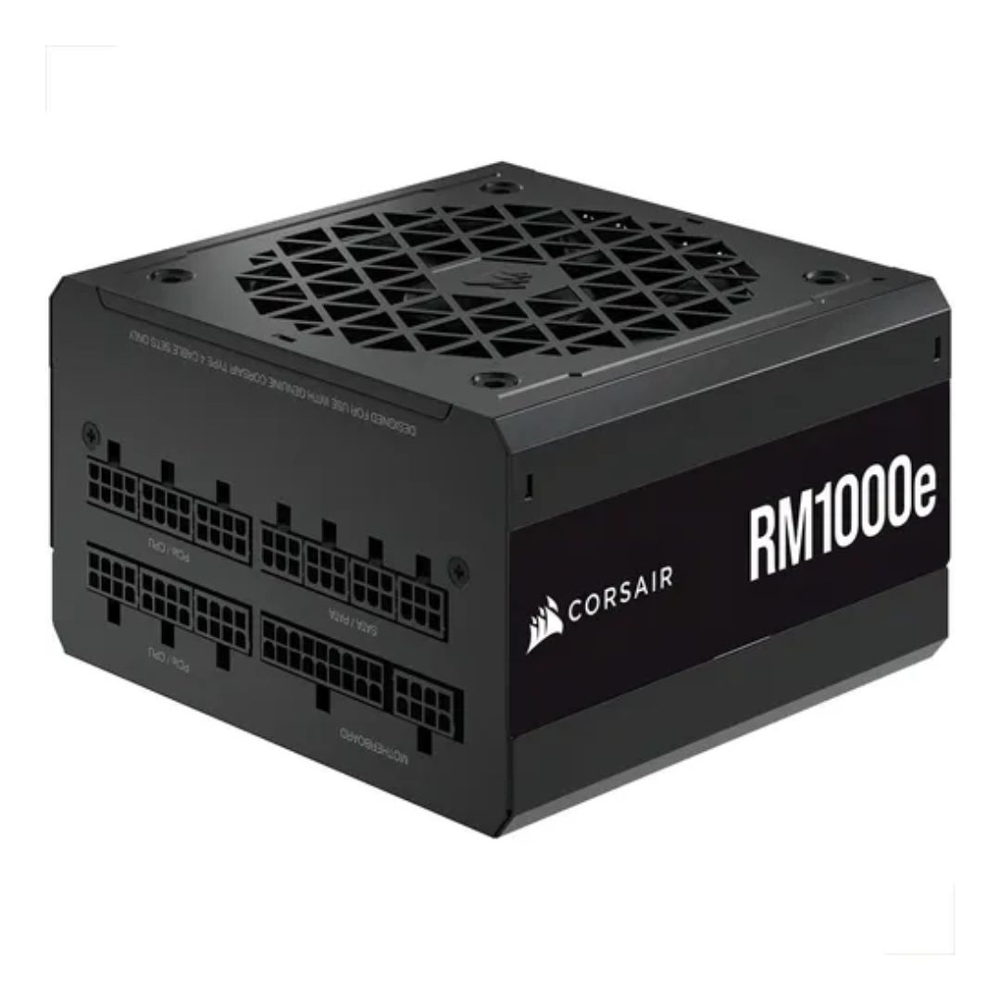
Fabrica fuentes de poder de alta calidad, muy utilizadas en computadores gamer y de alto rendimiento.
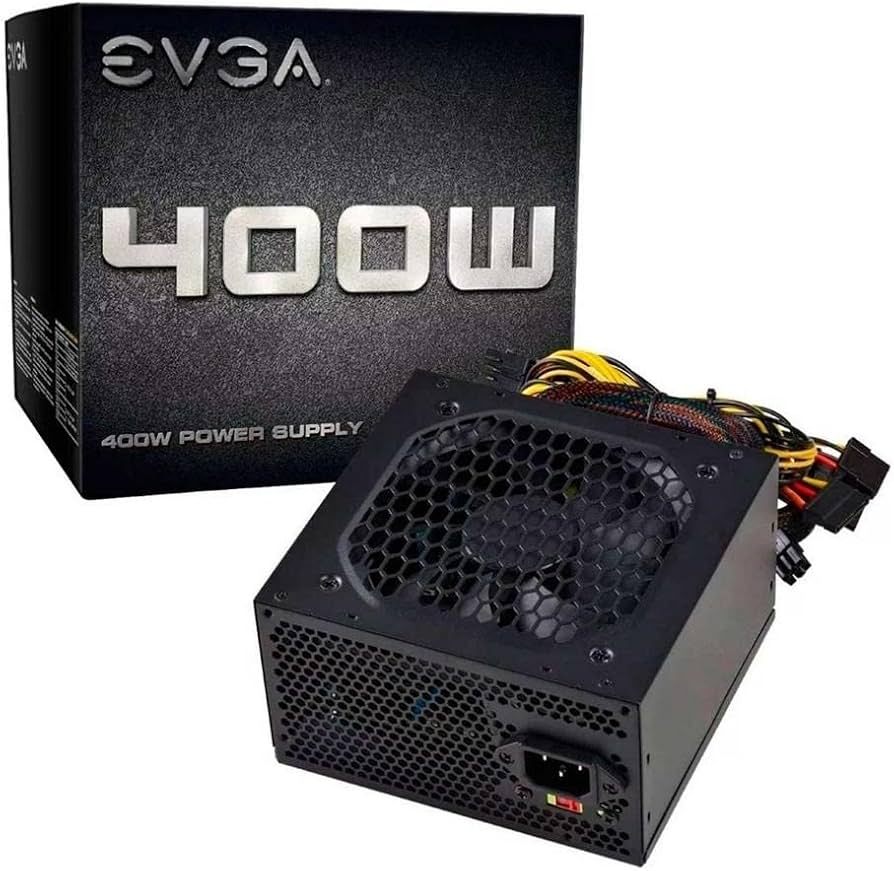
Es una marca reconocida por fabricar fuentes confiables y eficientes para computadores de escritorio.
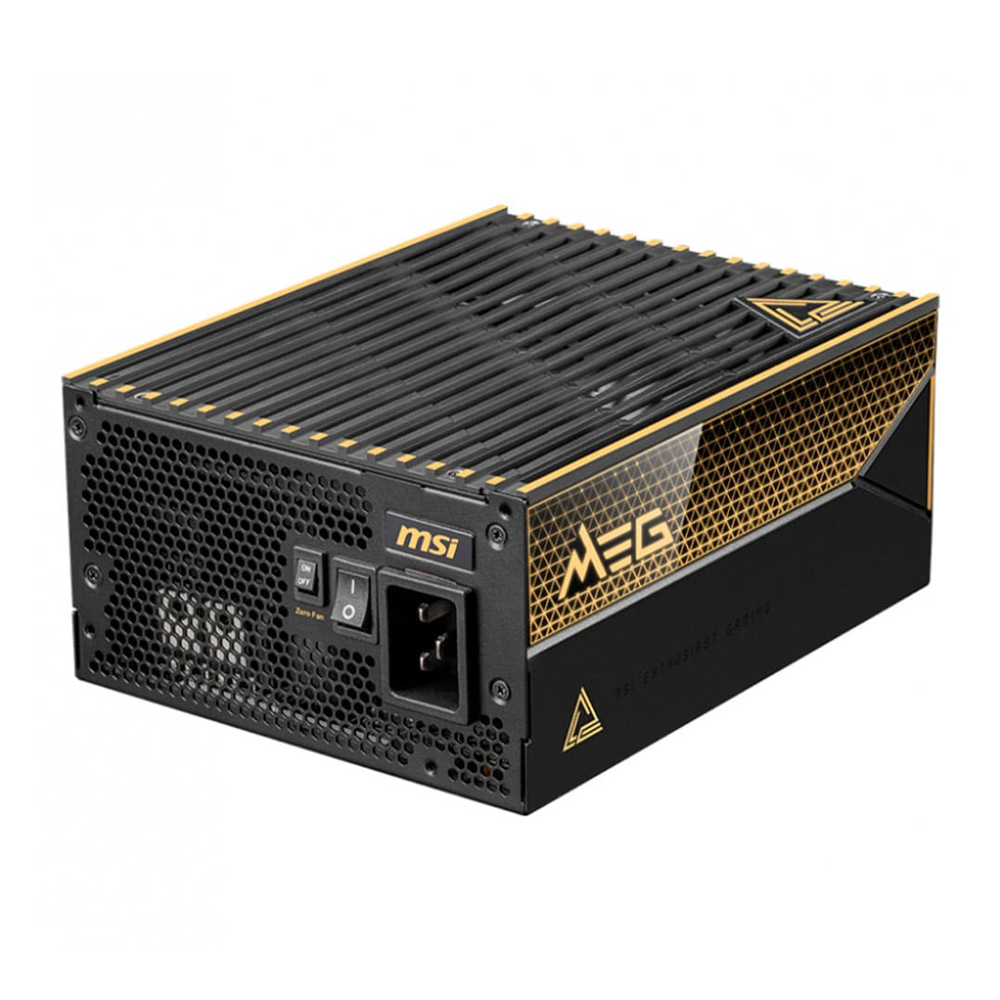
Ofrece fuentes de poder diseñadas para equipos de alto rendimiento, especialmente para videojuegos.
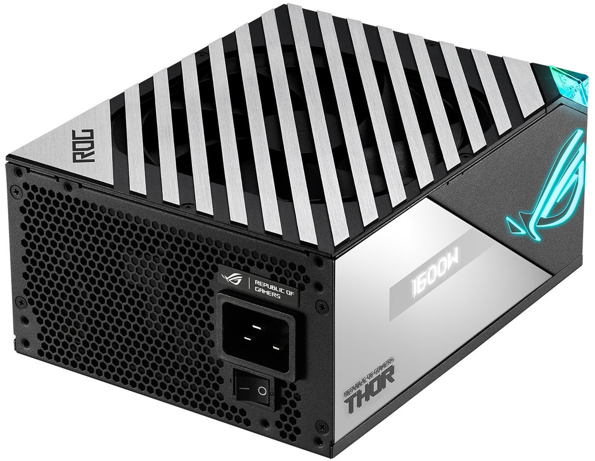
Desarrolla fuentes de poder con componentes de calidad y gran eficiencia energética.
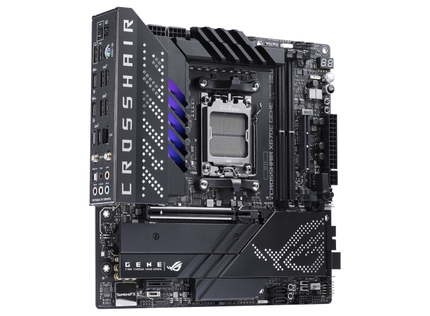
Es el formato más utilizado en computadores de escritorio. Ofrece gran compatibilidad y potencia.
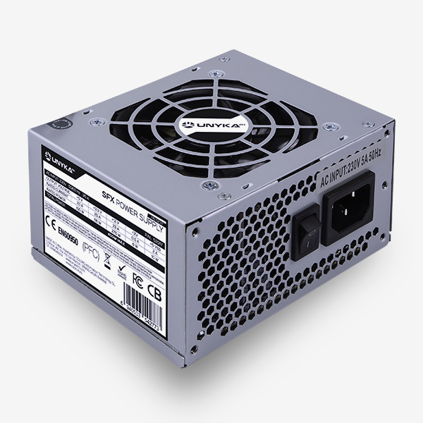
Es una fuente de poder más pequeña, diseñada para computadores compactos o de tamaño reducido.
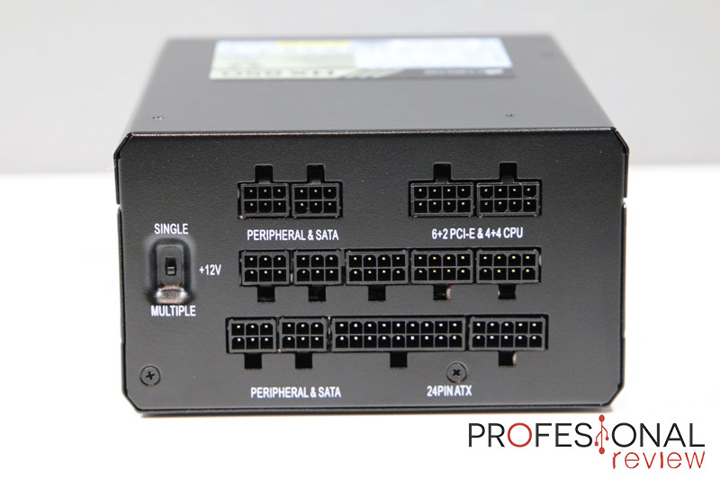
Permite conectar únicamente los cables necesarios, mejorando el orden y la ventilación del equipo.
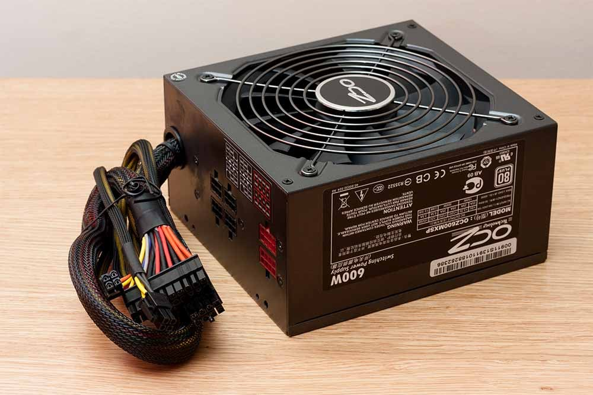
Algunos cables vienen fijos y otros se pueden conectar según las necesidades del usuario.
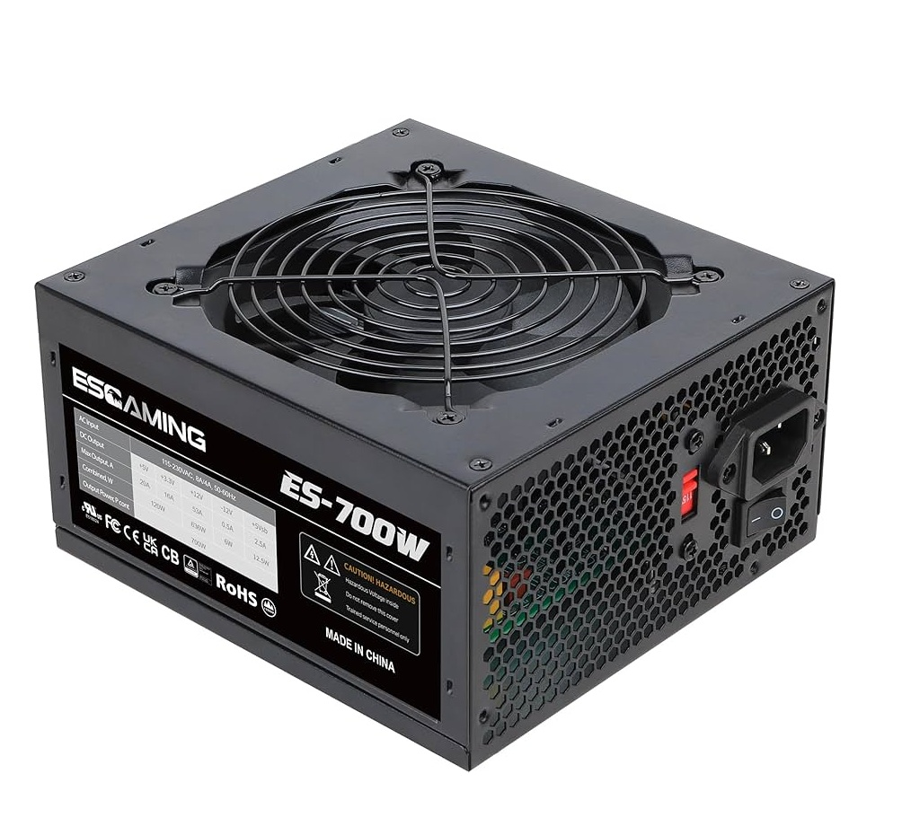
Todos los cables vienen unidos permanentemente a la fuente de poder.
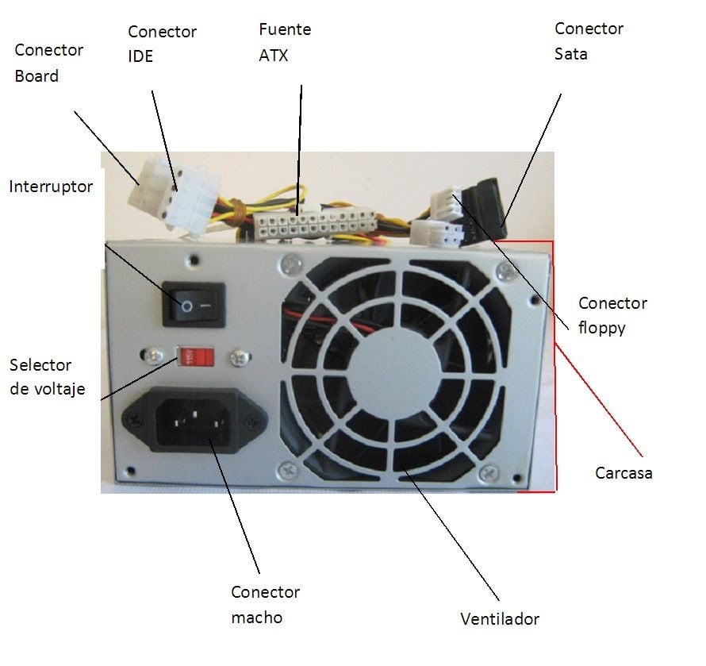
Ventilador: Ayuda a mantener la fuente de poder refrigerada para evitar el sobrecalentamiento.
Conector ATX: Es el cable principal que suministra energía a la placa base (motherboard).
Conector SATA: Alimenta discos duros, SSD y algunas unidades ópticas.
Conector PCIe: Proporciona energía adicional a las tarjetas gráficas.
Entrada de corriente: Lugar donde se conecta el cable de alimentación desde la toma eléctrica.
Interruptor: Permite encender o apagar completamente la fuente de poder.